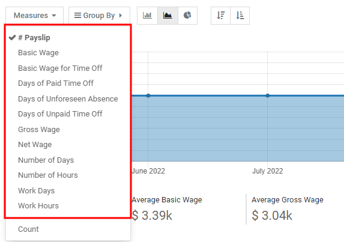

Reportes¶
En el menú Reportes de la mayoría de las aplicaciones puede encontrar varios reportes que le permiten analizar y visualizar los datos de sus registros.
Seleccionar una vista¶
Dependiendo del reporte, Odoo puede mostrar los datos de varias formas. Algunas veces está disponible una vista única personalizada por completo al reporte, mientras que varias vistas están disponibles para otros. Sin embargo, hay dos vistas genéricas específicas para los reportes: las vistas de gráfico y tabla dinámica.
Vista de gráfico¶
La vista de gráfico se utiliza para visualizar los datos de sus registros, esta le ayudará a identificar patrones y tendencias. A menudo puede encontrar esta vista en el menú reportes de las aplicaciones, pero también puede encontrarla en otros lugares. Para acceder a ella, haga clic en el botón de vista de gráfico que se ubica en la parte superior derecha de la página.

Vista de tabla dinámica¶
La vista de tabla dinámica se utiliza para agregar los datos de sus registros y desglosarlos para su análisis. Puede encontrar esta vista en el menú reportes de las aplicaciones, pero también puede encontrarla en otros lugares. Para acceder a ella, haga clic en el botón de vista de tabla dinámica que se ubica en la parte superior derecha de la página.

Elegir medidas¶
Tras seleccionar una vista, debe asegurarse de que solo se filtran los registros relevantes. A continuación, debe elegir lo que se medirá. Siempre hay una medida seleccionada de forma predeterminada, si desea editarla haga clic en medidas y elija una, o varias en el caso de las tablas dinámicas.
Nota
Cuando selecciona una medida, Odoo agrega los valores registrados en ese campo para los registros filtrados. Solo se pueden medir los campos numéricos enteros, decimales y monetarios. Además, la opción «número» se utiliza para contar el número total de registros filtrados.
Después de elegir qué desea medir, puede definir cómo se deben agrupar los datos según la dimensión que desea analizar. De forma predeterminada, los datos se agrupan por Fecha > Mes para analizar la evolución de las medidas a lo largo de los meses.
Truco
Cuando filtra un solo periodo de tiempo, se habilita la opción de compararlo con otro.

Example
Entre otras medidas, puede agregar las medidas de margen y número al reporte de análisis de ventas. De forma predeterminada, se selecciona la medida importe sin impuestos.
Puede agrupar las medidas por categoría de producto en el nivel de filas del ejemplo anterior del reporte de análisis de ventas.

Utilizar la vista de tabla dinámica¶
Agrupar datos es esencial para la vista de tabla dinámica pues le permite desglosar los datos para obtener información más detallada. Aunque puede usar la opción Agrupar por para agregar con rapidez un grupo en el nivel de las filas, como se muestra en el ejemplo anterior. También puede hacer clic en el botón con el signo de más (➕) junto al encabezado de total en el nivel de las filas y columnas, y luego seleccionar uno de los grupos preconfigurados. Para eliminar uno, haga clic en el botón con el signo de menos (➖).
Una vez que agregue un grupo, puede agregar nuevos en el eje opuesto o en los subgrupos recién creados.
Example
Puede dividir aún más las medidas en el ejemplo anterior del reporte de análisis de ventas mediante el grupo vendedor en el nivel de columnas y el grupo Fecha de orden > Mes en la categoría de producto Todos / Se pueden vender / Muebles de oficina.

Truco
Puede cambiar los grupos de las filas y columnas al hacer clic en el botón «girar eje» (⇄).
Puede hacer clic en la etiqueta de una medida para ordenar los valores en orden ascendente (⏶) o descendente (⏷).
Puede descargar una versión
.xlsxde la tabla dinámica al hacer clic en el botón de descarga (⭳).
Utilizar la vista de gráfico¶
Hay tres gráficos disponibles: de barras, de líneas y circular.
Los gráficos de barras se utilizan para mostrar la distribución o una comparación de varias categorías. Son bastante útiles, ya que pueden trabajar con conjuntos grandes de datos.
Los gráficos de líneas son útiles para mostrar los cambios en series temporales y tendencias a lo largo del tiempo.
Los gráficos circulares se utilizan para mostrar la distribución o comparación de un pequeño número de categorías cuando son parte de un conjunto significativo.


Truco
Para los gráficos de barras y líneas puede usar la opción de apilado cuando tiene al menos dos grupos, aparecerán uno encima del otro en lugar de uno junto al otro.


Para los gráficos de líneas puede usar la opción de acumulativo para sumar valores, resulta bastante útil para mostrar el cambio en el crecimiento durante un período de tiempo.